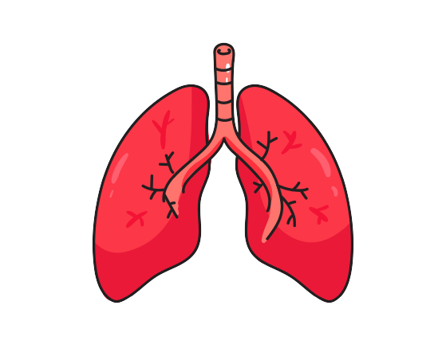
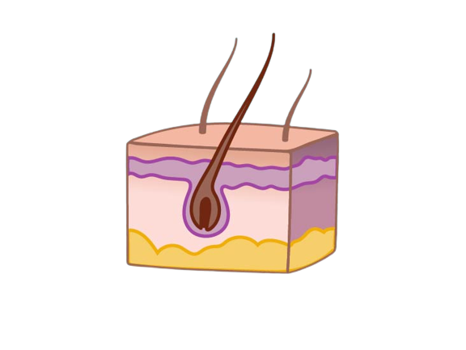

Risks ?
Fifty percent of smokers die of a smoking-related disease, and the life expectancy of
one in four smokers is reduced by as much as 15-20 years.
Before the advent of widespread tobacco use in World War II, lung cancer was rare. So rare, in fact, that
doctors were required to report cases of lung cancer to the federal government to help identify the local
environmental cause of the condition among an affected population, much like reporting cases of mesothelioma
today.
While most people recognize that smoking is highly destructive for their lungs, many have yet to come to
terms with how smoking affects the rest of the body. Damage to one's skin, mouth, hands, feet, respiratory
system, heart, bones, and reproductive system becomes readily evident in long-time smokers
Areas of the body damaged by smoking include:
Brain
Smoking can increase the likelihood of having a stroke by 2 ~ 4 times. Strokes can cause brain damage
and death.One way that stroke can cause brain injury is through a brain aneurysm, which occurs when the wall
of a blood vessel weakens and creates a bulge. This bulge can burst and cause a subarachnoid hemorrhage,
which can lead to a stroke.
Lungs

The lungs are perhaps the most obvious organ that smoking affects.
It often takes many years before a person notices any symptoms of smoking-related lung disease. This means
that people may not receive a diagnosis until the disease is quite advanced.
Smoking can impact the lungs in several ways. The primary reason is that smoking damages the airways and air
sacs — known as alveoli — in the lungs.
Three of the most common smoking-related lung conditions in the U.S. are:
Chronic obstructive pulmonary disease (COPD). COPD is a long-term
disease. It causes wheezing, shortness of breath, and chest tightness. COPD is the third leading cause
of death in the U.S.
Chronic bronchitis. Chronic bronchitis occurs when the airways produce
too much mucus. This leads to a long-lasting cough and inflamed airways. Over time, scar tissue and
mucus can completely block the airways and cause infection.
Emphysema. Emphysema is a type of COPD that reduces the number of alveoli
and breaks down the walls between them. This makes it difficult to breathe, even at rest, and over time,
a person may need an oxygen mask.
Other lung diseases caused by smoking include pneumonia, asthma, and tuberculosis.
Bones

According to the
Institutes
of Health (NIH), smoking reduces bone density, making the bones weaker and more brittle. Smoking can
also impair bone healing after a fracture.
Researchers find it difficult to say whether this is a direct effect of smoking, or due to other risk
factors prevalent in people who smoke. These include lower body weight and doing less physical exercise.
This may affect females more than males. Females are more prone to osteoporosis and broken bones.
Quitting smoking, even later in life, can help limit bone loss linked with smoking.
Heart

Chemicals in tobacco smoke increase the chance of heart problems and
cardiovascular diseases.
Smoking causes atherosclerosis, which is when plaque builds up in the blood and sticks to the artery walls.
This makes them narrower, reducing blood flow and increasing the risk of blood clots.
Smoking also damages the blood vessels, making them thicker and narrower. This makes it harder for blood to
flow, and also increases blood pressure and heart rate.
Smoking has links with the following cardiovascular conditions:
coronary heart disease, one of the leading causes of death
a heart attack, as smoking doubles the risk of heart attack
blockages that reduce blood flow to the skin and legs
stroke due to blood clots or burst blood vessels in the brain
Mouth
Smoking can have several effects on oral health and may cause:
Halitosis, or bad breath
stained teeth
dry mouth
reduced sense of taste
Smoking irritates the gum tissues. The American Dental Association (ADA) state that smoking
increases the risk of gum disease, which can add to halitosis.
Skin

Smoking reduces the amount of oxygen that can reach the skin. This speeds up the
aging process and can make skin appear dull or gray.
Smoking can cause:
facial wrinkles, especially around the lips
baggy eyelids
uneven skin coloring, such as a yellow or gray tone
dry, coarse skin
temporary yellowing of the fingers and fingernails
Smoking reduces how quickly skin wounds heal, increases the risk of skin infections, and increases
the severity of skin conditions, including psoriasis.